AC Circuits Lectures 4–6
Alternating current in three steps: first describe the sine wave itself (Lecture 4), then see how R, L and C each respond to it and learn the phasor/complex-number language (Lecture 5), and finally solve whole AC circuits and their power flow (Lecture 6). All the DC laws still apply — just with complex numbers.
1 The Sinusoidal Waveform — Definitions
Mains electricity alternates: the voltage swings smoothly positive and negative, over and over. The lecture's vocabulary for this waveform is the foundation for everything after, so nail these terms:
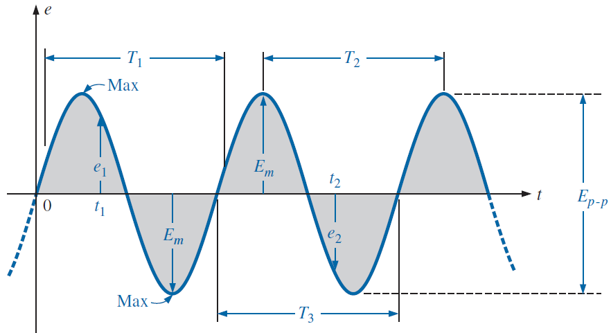
Instantaneous value (e, v, i — lowercase): the value at one particular moment. Peak amplitude (Em, Vm): maximum value measured from the average level. Peak-to-peak value (Ep-p): from the negative peak to the positive peak — twice the amplitude for a pure sine. Periodic waveform: one that repeats itself continually. Cycle: one complete portion of the waveform. Period (T): the time of one cycle.
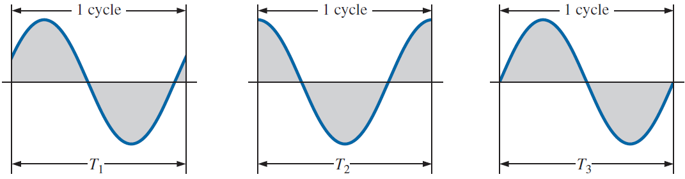
Reference: Boylestad, Ch. 13.2.
2 Frequency, Radians & Angular Velocity
Frequency counts cycles per second:
- f – frequency (hertz, Hz); 1 Hz = 1 cycle/s
- T – period (s)
- European mains: 50 Hz → T = 20 ms; US: 60 Hz
Radians
Angles in electronics are usually measured in radians: 2π rad = 360°, so 1 rad ≈ 57.3°.
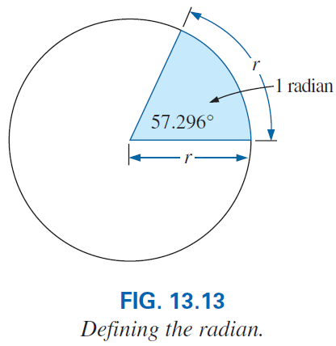
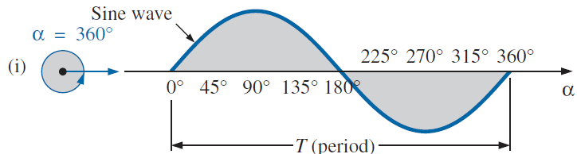
- e.g. 90° = π/2 rad, 30° = π/6 rad
Angular velocity ω
Picture the sine wave as the shadow of a spinning vector. How fast it spins is the angular velocity, and it links time to angle:
- ω – angular velocity (rad/s)
- α – angle travelled (rad) in time t (s)
- e.g. at f = 60 Hz: ω = 2π(60) ≈ 377 rad/s (lecture example)
Reference: Boylestad, Ch. 13.3–13.4.
3 General Format & Phase Relations
The complete mathematical description of a sinusoidal voltage or current:
- Vm, Im – peak values
- ωt – the running angle (rad)
- θ – phase shift: +θ moves the wave left (starts earlier, "leads"); −θ moves it right ("lags")
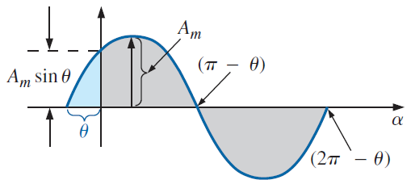
When comparing two waveforms of the same frequency: the one that reaches its peak first leads the other; the difference of their phase angles is the phase angle between them. Useful identities from the lecture: cos x = sin(x + 90°), and sin and cos waves 90° apart will matter constantly for L and C.
Reference: Boylestad, Ch. 13.5–13.6.
4 Average & Effective (RMS) Values
Average value
The average of a waveform over a stretch is its algebraic area divided by the length:
- Areas below the axis count negative — so a full sine cycle averages to zero
Effective (RMS) value — the one meters read
If the average is zero, how do we rate AC's ability to do work? Compare heating power. The lecture's experiment: find the DC current that heats water exactly as fast as a given AC current. The answer defines the effective or RMS value:
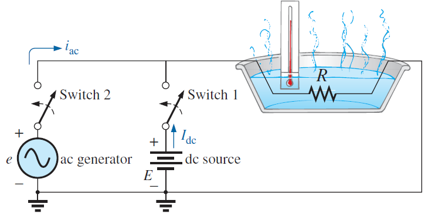
- valid for sinusoidal waveforms (comes from averaging sin², via sin²x = ½(1 − cos 2x))
- Unlabelled AC values are RMS by convention: "230 V mains" means Vm ≈ 325 V!
Reference: Boylestad, Ch. 13.7–13.8.
5 How R, L and C Respond to AC
Drive each basic element with a sinusoidal current and watch the voltage (recall vL = L diL/dt and iC = C dvC/dt — the derivative of a sine is a cosine, i.e. the same wave shifted 90°):
Resistor — in phase
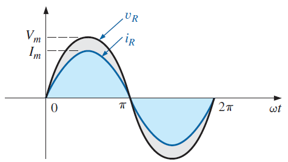
Inductor — voltage leads by 90°
The inductor's voltage depends on the slope of the current, so vL peaks where iL changes fastest:
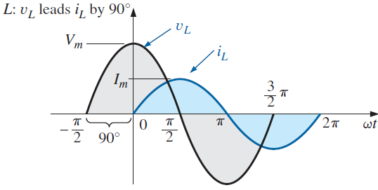
- XL – inductive reactance (Ω): the inductor's opposition to AC
- grows with frequency and inductance
Capacitor — current leads by 90°
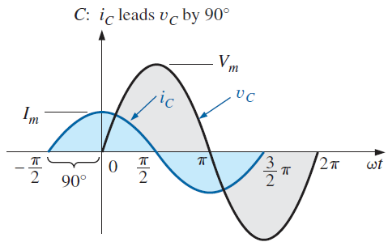
- XC – capacitive reactance (Ω)
- shrinks as frequency or capacitance grows
Reference: Boylestad, Ch. 14.2.
6 Frequency Response of R, L, C
Because XL and XC depend on frequency, every element has a personality across the spectrum:
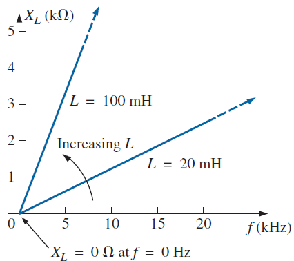
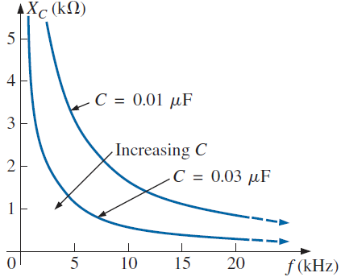
An ideal resistor is the boring one: R constant at every frequency (real resistors stay flat over a wide range). These three curves are the seed of filters and of resonance — at one special frequency XL and XC cross.
Reference: Boylestad, Ch. 14.3.
7 Complex Numbers & Phasors
Adding sinusoids point-by-point is painful. The fix: represent each sinusoid by a phasor — a frozen snapshot of its rotating vector — written as a complex number. Then AC circuit maths becomes algebra.
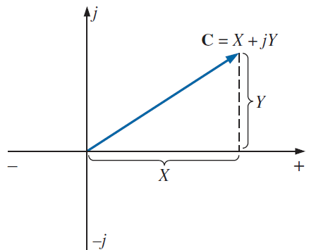
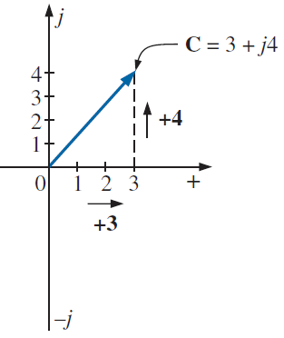
- Add/subtract in rectangular form (combine real parts, combine j-parts)
- Multiply/divide in polar form (multiply magnitudes, add angles ÷ divide magnitudes, subtract angles)
- Watch the quadrant when X < 0 — adjust θ by 180° (lecture example: −6 + j3 = 6.71 ∠153.43°)
From time domain to phasor domain
A sinusoid v = Vm sin(ωt + θ) becomes the phasor V = V ∠θ, where V = 0.707 Vm (RMS). All phasors in one problem share the same ω, so the diagram captures only magnitudes and phase differences:
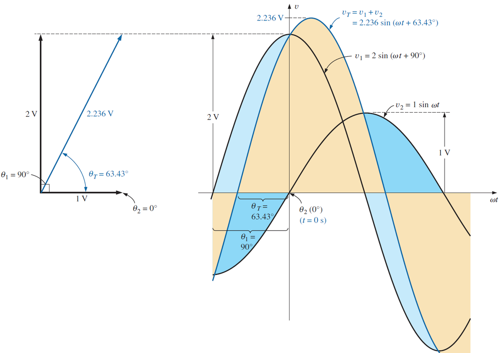
Reference: Boylestad, Ch. 14.5–14.9.
8 Impedance — Series & Parallel AC Circuits
Impedance Z is the AC generalization of resistance: a complex number whose magnitude opposes current and whose angle sets the v–i phase shift. The three elements as impedances:
- +90° (up the j-axis) for L, −90° (down) for C, 0° for R — exactly the phase shifts from section 5
Series AC circuits
Impedances in series add, exactly like resistors — but as complex numbers:
- XL and XC fight each other on the j-axis — they partially cancel
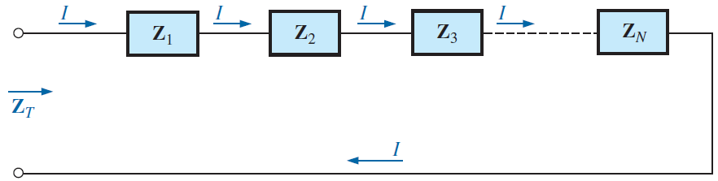
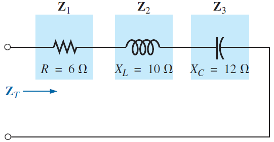
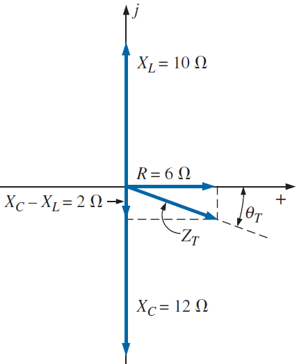
Parallel AC circuits
- same patterns as DC, evaluated with complex arithmetic
The DC toolbox carries over
Replace R with Z and every DC technique works unchanged — this is the lecture's central message:
- KVL, KCL, mesh, nodal, Y–Δ, superposition, Thévenin, Norton: all valid with impedances and phasor sources
Reference: Boylestad, Ch. 15.
9 AC Power & the Power Factor
Instantaneous power p = v i pulses at twice the supply frequency. What matters is its average — and how much of the circulating power actually does work:
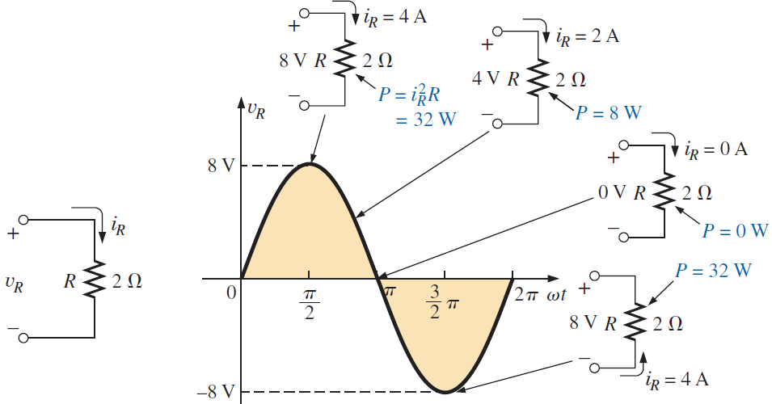
- P – real (average, active) power (watts, W) — does actual work / heating
- θ – phase angle between v and i
The power triangle
Three power quantities, one right triangle:
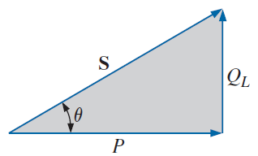
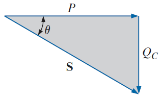
- S – apparent power (volt-amperes, VA): what the source must supply, Vrms·Irms
- P – real power (W): consumed by the resistive part
- Q – reactive power (volt-ampere reactive, VAR): swapped back and forth with L/C fields, never consumed
- Fp – power factor, 0…1: the fraction of apparent power doing real work
- resistive load: Fp = 1; pure L or C: Fp = 0
- lagging = inductive (current lags), leading = capacitive
Power-factor correction
Motors and other inductive loads draw large reactive power → large current for the same real work → losses. Adding a parallel capacitor supplies that reactive power locally: QC cancels QL, the triangle flattens (θ → 0, Fp → 1) and the supply current drops, while P is unchanged.
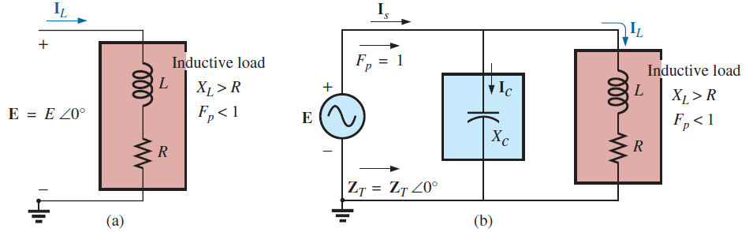
Reference: Boylestad, Ch. 19.